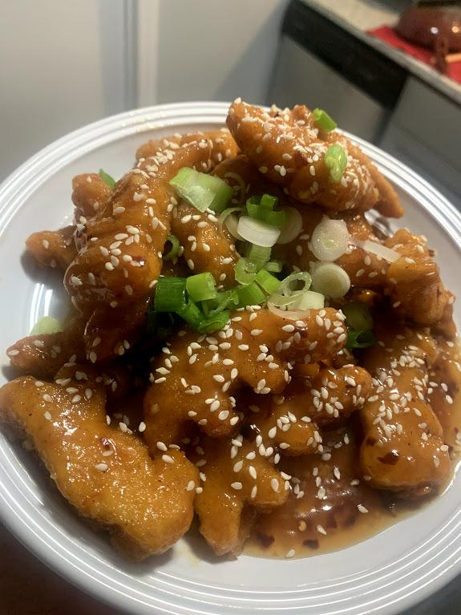

Home
Orange Chicken Dino Nuggets

A simple and delicious meal you can make while trashed out of your mind!
Ingredients:
- Dino-shaped chicken nuggets
- Half bottle of orange juice you didn't finish this morning
- 4 tablespoons of orange marmalade
- 2 tablespoons soy sauce
- 2 tablespoons of mirin
- Half tablespoon of sesame oil
- 1 Tablespoon corn starch
- 1 clove of garlic, crushed and diced
- A lot of red pepper flakes
Directions:
- Cook the nuggets however you would like.
- While waiting for the nuggets to cook, put all of the other ingredients in a small saucepan, and heat until thickened.
- Toss nuggets in finished sauce and plate. Optionally, garnish with sesame seeds and sliced green onions.